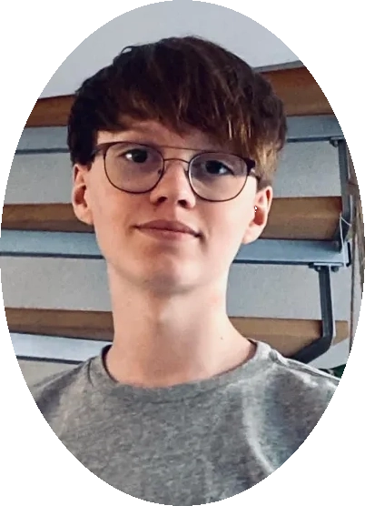
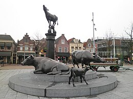
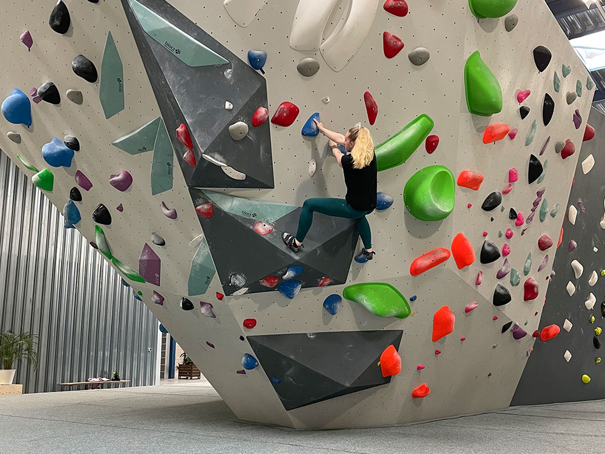

|  |
Wie ben ik?Ik ben Colin Meij, 17 jaar. Eerst zat ik op IVKO, een kunstschool waar ik veel met kunst deed. Nu doe ik de software developer opleiding op het Mediacollege. |
Mijn Woonplaats.Ik woon al mijn hele leven in Purmerend, en daar heb ik ook op de basisschool gezeten, op De Toermalijn. Dat was een leuke tijd, want ik had daar veel vrienden met wie ik veel omging. Daarnaast woont een groot deel van mijn familie in Purmerend, en sommigen van hen wonen zelfs in dezelfde straat als ik, wat altijd gezellig is. |
 |
|  |
In mijn vrije tijd...Ik ben Colin Meij, 17 jaar. Eerst zat ik op IVKO, een kunstschool waar ik veel met kunst deed. Nu doe ik de software developer opleiding op het Mediacollege. |
Mijn Top 10 Games
- Minecraft
- Call of Duty: Warzone
- Grand Theft Auto V
- FIFA 23
- League of Legends
- Valorant
- The Legend of Zelda: Breath of the Wild
- Roblox
- Apex Legends
- Red Dead Redemption 2